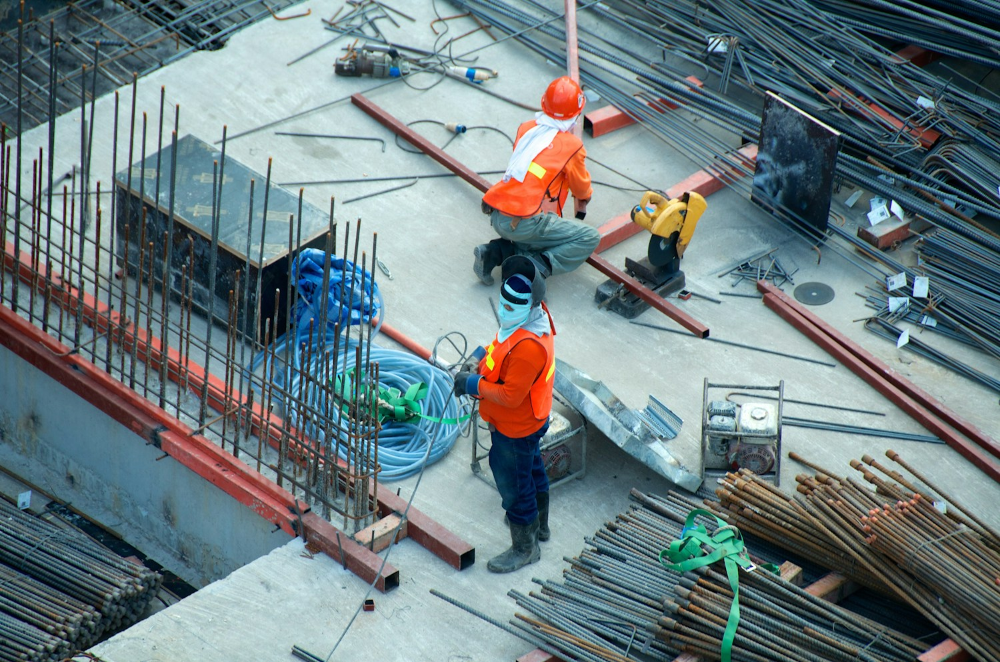

آزادراه تهران–کرج
مسیر اصلی اتصال پایتخت به کرج و شهرهای غربی؛ مناسب برای بررسی رفتوآمدهای بینشهری و غرب تهران.
تهران، منطقه ۲۱، محدوده وردآورد؛ روبهروی پمپ بنزین مطابق نشانی اعلامشده.
بر اساس اطلاعات مکانی پروژه، این مجموعه در شهر تهران، منطقه ۲۱، محله وردآورد، بلوار اصلی و نبش بزرگراه تهران–کرج قرار دارد. در توضیحات اولیه نیز نشانه روبهروی پمپ بنزین ذکر شده است. موقعیت مکانی پروژه در نقشه این صفحه نمایش داده شده است و مسیر دسترسی نیز از طریق نقشه قابل بررسی است.

مزیت مکانی زمانی معنا پیدا میکند که از روی نقشه و در شرایط واقعی سنجیده شود. از موقعیت پروژه، مسیرهای رفتوآمد به محل کار، مراکز آموزشی و درمانی، خرید روزانه و ایستگاههای حملونقل عمومی را بررسی کنید. زمان سفر در ساعات اوج ترافیک میتواند با زمانهای خلوت تفاوت قابلتوجهی داشته باشد.
یکی از امتیازهای قابل توجه محدوده وردآورد، قرارگیری در کریدور ارتباطی غرب تهران است. آزادراه تهران–کرج محور اصلی این کریدور بهشمار میرود و در کنار آن، بزرگراه شهید لشگری و بزرگراه فتح از محورهای مهم شبکه غرب و جنوبغرب شهر هستند. این شبکه از طریق مسیرهای رابط و تقاطعهای شهری، ارتباط با بخشهای دیگر تهران را ممکن میکند.
مسیر اصلی اتصال پایتخت به کرج و شهرهای غربی؛ مناسب برای بررسی رفتوآمدهای بینشهری و غرب تهران.
محور مهم غرب تهران در امتداد کریدور تهران–کرج و مسیر دسترسی به بخشهایی از منطقه ۲۱ و محدودههای پیرامونی.
یکی از محورهای شریانی غرب و جنوبغرب تهران برای ارتباط با پهنههای شهری و صنعتی.
در شبکه بزرگراهی گستردهتر غرب تهران، از طریق مسیرهای رابط و تقاطعها میتوان به محورهای مهمی مانند همت و حکیم متصل شد.
برای معرفی دقیق امکانات محله، بهتر است خدمات در چند گروه بررسی شوند. فاصله و زمان دسترسی هر مرکز باید با نشانی دقیق و مسیریابی روزآمد مشخص شود؛ بنابراین در این نسخه از اعلام فاصله یا زمان ساختگی خودداری شده است.
درمانگاهها، داروخانهها، مراکز خدمات پزشکی و بیمارستانهای قابل دسترس در محدوده غرب تهران.
مدارس، مراکز آموزشی و آموزشگاهها برای پاسخگویی به نیاز خانوادهها.
فروشگاهها، مراکز خرید، سوپرمارکتها، نانواییها و خدمات ضروری محلهای.
فضاهای ورزشی، بوستانها و مراکز تفریحی در محدوده غرب تهران و مسیرهای دسترسی آن.
بانکها، خودپردازها، دفاتر خدماتی و مراکز ارائه خدمات عمومی.
جایگاههای سوخت، تعمیرگاهها و خدمات مرتبط با خودرو در محورهای اصلی منطقه.

طراحی و نمای ساختمانهای معاصر.

ترکیب حجم، پنجره و نمای ساختمان مسکونی.

مراحل و جزئیات اجرای ساختمان.
موقعیت مکانی پروژه در نقشه نمایش داده شده است.